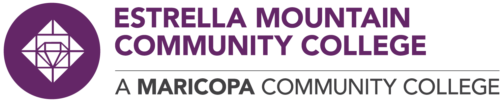
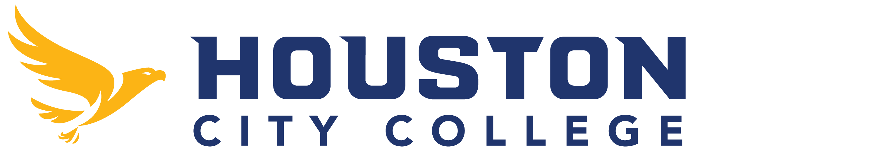
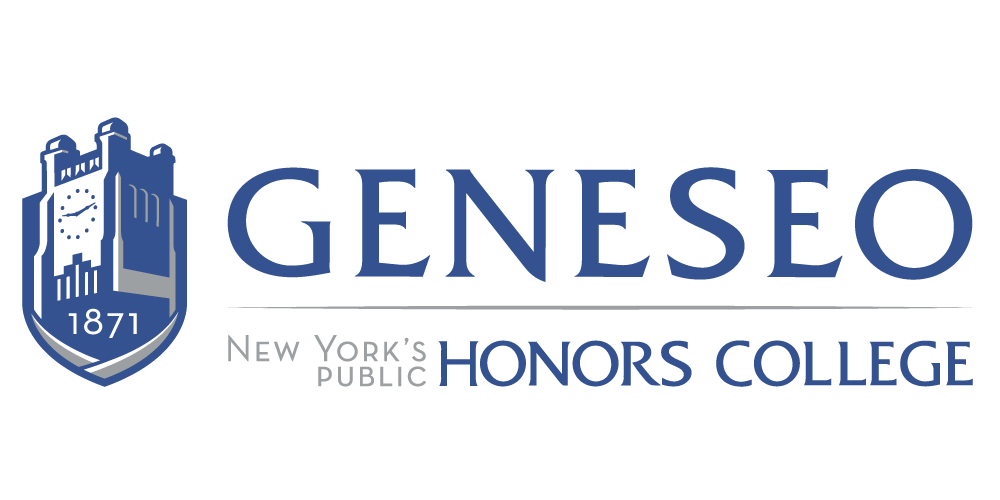

Institutional plans
Plans tailored to local context
Each institution focuses on partnership-building and infrastructure needs aligned to its region and maturity—while sharing lessons learned across the cohort.
 Estrella Mountain Community College (EMCC)
Avondale / Phoenix area, Arizona Advanced manufacturing, data centers, cybersecurity, semiconductors/AI
- Expand educator-industry externships (Industry Immersion).
- Enhance Microsoft Data Center operations with part-time staffing and iMasons collaboration.
- Host expos and establish advisory boards for AIT and cybersecurity.
 Houston Community College (HCC)
Houston, Texas Applied AI workforce development and industry ecosystem building
- Create an AI Ecosystem Manager role to coordinate partnerships (Archimedes Initiative).
- Deliver regular industry engagement, tours, and field trips.
- Leverage partnerships to enable internships, workshops, donations, and AI faculty recruitment.
 SUNY Geneseo
Geneseo / Rochester area, New York Strategic external partnership development + faculty fellows
- Launch Project ExPanD team for sustainable partnership infrastructure.
- Implement CRM for partnership coordination and retention of institutional knowledge.
- Create a Faculty Fellows program tied to external partner activities.
SUNY Polytechnic Institute (SUNY Poly)
Utica / Mohawk Valley, New York Satellite partnership sites + CRM + national consortia
- Develop pilot satellite sites near industry clusters (e.g., Griffiss).
- Adopt a partnership-focused CRM and conduct trainings.
- Pursue national consortia membership (e.g., semiconductor-focused networks).
University of Wisconsin – La Crosse (UWL)
La Crosse, Wisconsin Community/industry engagement infrastructure and policy
- Create faculty fellows support and training for community engagement.
- Develop sustainable partnership policies and improve CRM integration.
- Host annual collaboration events to align emerging tech needs (e.g., applied AI).
Read more
This site is a clean, web-friendly adaptation. For full narrative detail, refer to the original documents provided with the project.